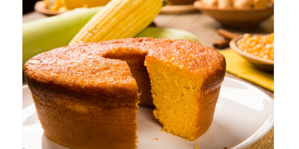

RECEITA - BOLO DE MILHO
INGREDIENTES
- 4 ovos
- 3 latas de milho
- 1 pitada de sal
- 1 xícara de chá óleo
- 1 xícara de chá de leite
- 2 xícaras de chá de açúcar
- 1/2 xícara de chá de farinha de trigo
- 1/2 xícara de chá de amido de milho
- 1 colher de sopa de fermento em pó
- 2 colheres de sopa de coco ralado(opcional)
MODO DE PREPARO
- Pré-aqueça o forno em temperatura média (180° C).
- Unte e enfarinhe uma assadeira retangular média.
- No copo do liquidificador, coloque os ovos, o milho, o sal, o óleo, o leite e o açúcar, e bata até ficar homogêneo.
- Acrescente a farinha de trigo, o amido de milho e o fermento, e bata novamente.
- Disponha a massa na assadeira, polvilhe na superfície o coco ralado e leve ao forno por 45 minutos, ou até que um palito, depois de espetado na massa saia limpo.
- Retire o forno, deixe esfriar, desenforme e corte em quadrados. Sirva a seguir!
Voltar